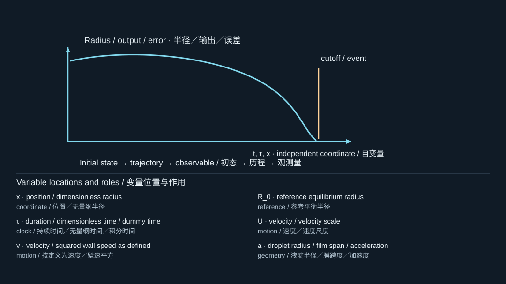

13. A reproducible numerical laboratory
可复现数值实验
13.1 What the supplied program actually computes
配套程序实际计算什么
The file code/bubble_lab.py implements an incompressible Rayleigh–Plesset model, a constant-ambient Keller–Miksis model, and the empty-cavity Rayleigh benchmark. It integrates a two-state system with . The gas follows a fixed polytropic law; vapor pressure and liquid properties are constant. The demonstration starts from an expanded bubble at rest, not from laser nucleation.
文件code/bubble_lab.py实现不可压缩Rayleigh–Plesset模型、恒定环境压力下的Keller–Miksis模型，以及空腔Rayleigh基准。它积分由构成的两状态系统，其中。气体服从固定多方关系，蒸气压和液体性质恒定。演示从膨胀后的静止气泡开始，而不是从激光成核开始。
The default reference radius is 10 micrometers. The comparison figures use and , with identical initial states for both models. This deliberately modest case stays well below the chosen Mach guard. Stronger collapse is used only to verify that the guard actually stops integration.
默认参考半径为10微米。对比图采用和，两个模型使用完全相同的初态。这个有意选择的温和案例，始终明显低于所设Mach保护阈值。更强塌缩案例仅用于检验保护机制确实能够终止积分。
13.2 Scaling the equations before integration
积分前先进行尺度化
The public interface uses SI units, but the solver integrates dimensionless variables , , and , where . Then
程序对外接口采用SI单位，但求解器积分无量纲变量、和，其中。于是

The diagram locates the physical system; its key lists the symbols in the formula. Read the definition in the surrounding derivation when a letter has different roles.
图示标出物理体系，图例列出公式中的符号。若某字母有多种作用，应以邻近推导中的定义为准。
where is equation (3.4) or (7.3) solved for acceleration. Scaling prevents the same absolute tolerance from treating a micrometer-scale radius and a meter-per-second velocity in incompatible ways. It also makes parameter comparisons easier to interpret.
其中由式(3.4)或(7.3)整理为加速度形式。尺度化可以避免同一个绝对容差对微米级半径与米每秒级速度产生不相容的控制，同时也便于解释参数对比。
The implementation uses adaptive DOP853 integration with dense output. Its maximum internal step is additionally bounded relative to the linear period. Dense plotting output is not the same thing as a small integration step: drawing more interpolated points does not repair an inaccurate solution.
程序使用带稠密输出的自适应DOP853积分，并额外按线性周期限制最大内部步长。稠密绘图输出不等于较小积分步长：增加插值绘图点数，无法修复本身不准确的解。
13.3 Running the laboratory
运行实验
From the package directory, create a Python environment with NumPy, SciPy, and Matplotlib, then run the command below. The tested package versions are recorded in data/verification.json; requirements.txt records the environment used to generate the supplied results.
在交付包目录中，建立安装NumPy、SciPy和Matplotlib的Python环境，然后运行以下命令。实际测试的软件版本记录在data/verification.json中，requirements.txt记录生成本次结果所使用的环境。
python code/bubble_lab.py --output data --plots
The command writes CSV trajectories, a JSON verification report, and seven separate figures. The original paper PDFs are not needed to run the code. Running the command does not validate a physical experiment; it reproduces the teaching calculations and mathematical checks.
该命令输出CSV轨迹、JSON验证报告和七幅独立图像。运行代码不需要原始论文PDF。执行命令并不意味着验证了某个物理实验，而是复现教学计算和数学检查。
For a parameter experiment, save the following script in the package root. It changes viscosity while leaving the gas-content definition and all other parameters unchanged. The printed stop reason should always be inspected before interpreting extrema.
进行参数实验时，可将以下脚本保存在交付包根目录中。它只改变黏度，保持气体含量定义及其他参数不变。在解释任何极值之前，都应检查输出中的停止原因。
from dataclasses import replace
from code.bubble_lab import Parameters, simulate
base = Parameters()
for viscosity in (0.5e-3, 1.0e-3, 2.0e-3):
p = replace(base, mu=viscosity)
result = simulate(p, model="KM", radius_factor=1.8, cycles=6)
print(viscosity, result["stop"], result["max_mach"])
The package includes code/__init__.py for this import pattern. In an interactive environment where Python's standard-library module named code is already imported, instead add the package's code directory to sys.path and import bubble_lab directly, as shown in the README.
交付包包含支持这种导入方式的code/__init__.py。若在交互式环境中已经导入了Python标准库中同名的code模块，则应按README中的方法，把交付包的code目录加入sys.path，再直接导入bubble_lab。
13.4 Verification results supplied with this edition
本版附带的验证结果
The following checks were actually executed. Errors refer to the stated normalization, not to experimental accuracy. Small numerical values demonstrate consistency with the implemented mathematical problem; they do not establish that the closure laws represent a real laser bubble.
以下检查均已实际执行。误差采用所列归一化方式，并非实验精度。较小数值说明计算与所实现数学问题相一致，但不能证明闭合关系准确代表真实激光气泡。
| Check / 检查 | Observed result / 实测计算结果 |
|---|---|
| RP equilibrium radius error / RP平衡半径相对误差 | |
| KM equilibrium radius error / KM平衡半径相对误差 | |
| Small-amplitude period relative error / 小振幅周期相对误差 | |
| Inviscid RP energy drift / 无黏RP能量相对漂移 | |
| Viscous energy-balance residual / 黏性能量平衡相对残差 | |
| KM versus RP as , radius difference divided by / 无限声速极限半径差除以 | |
| KM tolerance refinement, radius difference divided by / KM容差加密半径差除以 | |
| Rayleigh finite-cutoff time relative error / Rayleigh有限截止半径时间相对误差 | |
| Strong-collapse terminal Mach number / 强塌缩停止时Mach数 |
The equilibrium checks test signs and initialization. The small-amplitude test compares a numerically measured period with equation (6.2), using roots of the velocity interpolation rather than coarse sampled maxima. The energy tests probe the full nonlinear trajectory. The infinite-sound-speed check tests the algebra of the compressible extension. The guard test verifies that invalid-regime reporting is not silently bypassed.
平衡检查检验符号和初始化。小振幅测试将数值得到的周期与式(6.2)比较，并通过速度插值的零点而不是粗采样极大值确定周期。能量测试检查完整非线性轨迹。无限声速检查检验可压缩扩展的代数实现。保护测试则确认程序不会默默越过无效区域而继续报告结果。
13.5 What not to do when the solver becomes difficult
求解困难时不要做什么
Do not replace negative trial radii by a tiny positive number and continue. Do not cap pressure at an arbitrary value merely to avoid overflow. Do not interpret a dense time trace as convergence evidence. Instead inspect the physical regime, event location, internal step size, scaling, and closure. A singular model cannot be repaired by a smaller time step alone.
不要将负的试探半径替换为极小正数后继续计算；不要只为了避免溢出而任意截断压力；也不要把稠密时间曲线当作收敛证据。应检查物理范围、停止事件、内部步长、尺度化和闭合关系。仅减小时间步长，不能修复一个奇异模型。
For a Rayleigh collapse benchmark, compare numerical and analytic times at the same finite cutoff radius. Comparing a stopped numerical trajectory against the analytic time to zero mixes two different endpoint problems. The code performs the correct finite-cutoff comparison.
对于Rayleigh塌缩基准，应在相同有限截止半径下比较数值时间和解析时间。若把提前停止的数值轨迹与解析到零半径的时间比较，就混合了两个不同终点问题。配套代码执行的是正确的有限截止比较。
13.6 Moving from ODEs to field simulation
从常微分方程走向场仿真
A practical hierarchy is: radial ODE for an isolated bubble; axisymmetric interface-resolving flow for an aligned bubble and film; fully coupled axisymmetric fluid–structure interaction for compliant loading; and three-dimensional compressible flow when symmetry breaking or shock propagation controls the target quantity. The fully compressible rigid-wall source [S418] is a reminder that jet impact and local pressure require a different numerical representation from a radius history.
一个实用层次是：用径向常微分方程研究孤立气泡；用轴对称界面解析流动研究同轴气泡与薄膜；用完整轴对称流固耦合研究柔性加载；当对称性破缺或激波传播控制目标量时，再使用三维可压缩流动。完全可压缩刚壁研究[S418]提醒我们，射流冲击和局部压力需要不同于半径历程的数值表达。
An arbitrary Lagrangian–Eulerian moving mesh can follow a smooth interface but struggles when it pinches off or changes topology. Volume-of-fluid or level-set methods can accommodate topology changes but introduce interface-resolution and conservation issues. Axisymmetry suppresses non-axisymmetric modes by construction. Every method trades one set of difficulties for another; no method name alone guarantees accuracy.
任意Lagrange–Euler移动网格可以跟踪平滑界面，但在颈缩断裂或拓扑改变时会面临困难。流体体积分数法或水平集法可以处理拓扑变化，但会引入界面分辨率和守恒问题。轴对称模型则从构造上排除了非轴对称模态。每种方法都在不同困难之间取舍，任何方法名称本身都不保证精度。
For field calculations, check mesh refinement, time refinement, domain-size sensitivity, outgoing-wave treatment, interface conservation, and structural energy transfer. Numerical verification asks whether equations were solved correctly; experimental validation asks whether those equations describe the physical system adequately. Report them separately.
对于场计算，应检查网格加密、时间加密、域尺寸敏感性、出射波处理、界面守恒和结构能量传递。数值验证关注方程是否被正确求解；实验验证关注方程是否充分描述物理系统。二者应分开报告。